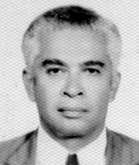

<style>
section {
        display: flex;
        flex-direction: row;
        align-items: center;
        justify-content: center;
        gap: 40px;
        margin: 40px 0;
    }


    .conteudo {
        max-width: 1000px;
        font-family: Arial, sans-serif;
        font-size: 16px;
        line-height: 1.6;
        color: #333;
        text-align: justify;
    }

    .conteudo p {
        
        margin-bottom: 16px;
    }
    img {
        width: 300px;
        height: auto;
        border-radius: 8px;
    }
</style>
<section>

    <div class="conteudo">

        <h2>EUVALDO THOMAZ DE SOUSA</h2>
        
        <p>O médico Euvaldo Thomaz de Sousa teve uma atuação política destacada no cenário regional na segunda metade do século XX. Bisneto de Joaquim Ayres da Silva e neto do Dr. Chiquinho Ayres, um importante líder político do Tocantins, Euvaldo continuou a tradição familiar de serviço público. Foi eleito prefeito de Porto Nacional em uma votação surpreendente, exercendo o mandato entre 1983 e 1987. Sua administração foi marcada por diversas realizações e teve como princípio básico a valorização do homem, com ênfase na municipalização da saúde e da educação, sem deixar de promover o desenvolvimento da produção e dos transportes.<p> 
        <p>Durante sua gestão, foram criadas escolas, postos de saúde, áreas de lazer, creches e cursos pré-escolares em vários bairros da cidade. Nos povoados do município, foram instalados grupos geradores de energia elétrica e abertos diversos poços artesianos para garantir o abastecimento de água potável. Na área da produção e infraestrutura, destacam-se a abertura e conservação de estradas, construção de pontes, aquisição de patrulha rodoviária, asfaltamento e bloqueteamento de ruas e logradouros, canalização de águas pluviais e ampliação da arborização urbana. A construção da rodoviária municipal foi um dos grandes marcos da administração.</p>
        <p>No setor esportivo e de lazer, foi erguido um ginásio coberto e instalados parques infantis. Na saúde, merecem destaque a recuperação do Hospital da OSEGO e a reativação da Escola Auxiliar de Enfermagem. Confirmando o reconhecimento de Porto Nacional como polo cultural, Euvaldo empenhou-se na implantação do Campus Avançado da Universidade Federal de Goiás - UFG e no funcionamento da Faculdade de Filosofia do Norte Goiano. Também demonstrou sensibilidade pela preservação da memória histórica da cidade, instalando bibliotecas e patrocinando a publicação de obras sobre a história local.</p>
        
        
        
    </div>
    <div class="imagem">
        
        </div>

    

    


</section>